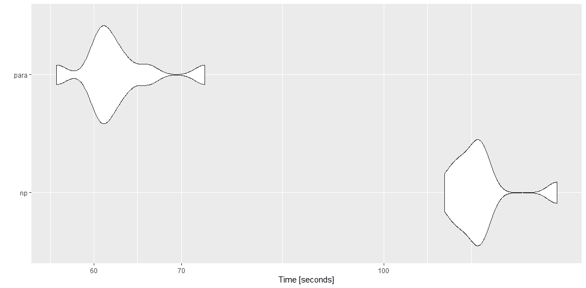

wildlandhydRo is a package that leverages USGS and SNOTEL APIs.
By Josh Erickson in R Hydrology
August 19, 2021
Intro
The goal of wildlandhydRo is to create wrapper functions around commonly used packages like streamstats, snotelr and dataRetrieval and prepare them for chunk-based parallelism, data munging and reporting. Basically, a package for me but worth sharing with others.
Installation
You can install the development version from GitHub with:
# install.packages("devtools")
devtools::install_github("joshualerickson/wildlandhydRo")Examples
Below are some common examples that I routinely use with the package.
Parallel
With {wildlandhydRo} it is really easy to get station data in parallel. The functions use the {furrr} framework and will work by planning a session prior to calling the function. Below is a quick benchmark between the options; regular (np) or parallel (para).
library(wildlandhydRo)
library(microbenchmark)
library(dataRetrieval)
sites <- dataRetrieval::whatNWISsites(stateCd='MT', parameterCd = '00060') %>%
filter(nchar(site_no) <= 8)
tm <- microbenchmark(
'np' = {
batch_USGSdv(sites = sites[1:50,]$site_no, parallel = FALSE)},
'para' = {
future::plan('multisession')
batch_USGSdv(sites = sites[1:50,]$site_no, parallel = TRUE)},
times = 10
)
tm
autoplot(tm)
You can do this for most functions in the package, e.g. batch_*(), wym*(), ym*(), get_Basin(), etc.
Annual and Monthly Stats
With the package you can get monthly, annual and monthly-annual statistics for a snotel or usgs sites. You can provide a previously create batch_*() data.frame or the station id. This creates/mungs the results of the daily values to generate mean, maximum, median and standard deviation per water year or per water year per month. It also includes peaks from dataRetrieval::readNWISpeak(); annual base-flow (tp = 0.9, window = 5) and Base-flow Index (BFI) (total-flow/base-flow) from baseflow; annual coefficient of variance (sd of flow/mean of flow); and normalization methods Flow/drainage area, Flow/(all time mean flow) and Flow/log(standard deviation). The window for all the methods are annual, e.g. 1. This leaves it up to the user to explore different windows if inclined. Monthly stats
water_year <- wyUSGS(sites = '12304500')
ggplot(water_year, aes(peak_dt, Peak)) +
geom_line() +
labs(title = 'Peak Flow per Water Year',
subtitle = paste0(water_year %>% slice(n=1) %>% .$Station))
monthly <- wymUSGS(sites = '12304500')
ggplot(monthly, aes(year_month, coef_var)) +
geom_line() +
labs(title = 'Monthly Coefficient of Variance',
subtitle = paste0(monthly %>% slice(n=1) %>% .$Station))
Get Percentiles for Reporting
You can also just generate percentiles for daily values or months.
- Daily
yaak_dv <- batch_USGSdv(sites = '12304500')
usgs_rep <- reportUSGSdv(procDV = yaak_dv, days = 60)
plot_reportUSGS(usgs_rep)
- Monthly
usgs_rep_month <- reportUSGSmv(procDV = yaak_dv)
plot_reportUSGS(usgs_rep_month %>% filter(year_nu >2020), time = 'month')
Get a Drain Point
Sometimes you just want to get the drainage area above a point and then do some other things. With get_Basin() function you just have to provide a sf point and it will return the basin. If you want zonal stats associated with that drainage area then just use get_BasinStats().
- Basin
pt <- tibble(lon = -114.36, lat = 48.92)
pt <- sf::st_as_sf(pt, coords = c('lon', 'lat'))
basin <- get_Basin(pt)
ggplot() + geom_sf(data = basin)
- Basin Stats
basin_stats <- get_BasinStats(basin)
basin_stats %>% sf::st_drop_geometry() %>%
pivot_longer(cols = c('TOT_PET', 'TOT_BFI', 'TOT_TWI')) %>%
select(name, value, comid) %>%
right_join(basin_stats, by ='comid') %>% sf::st_as_sf() %>%
ggplot() +
geom_sf(aes(fill = value)) +
facet_wrap(~name, nrow = 3) + theme_void()